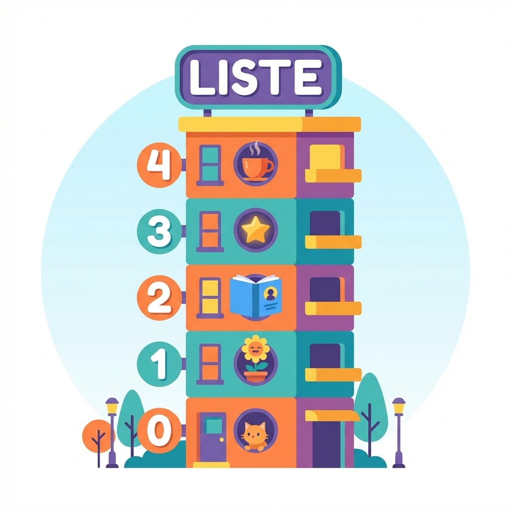
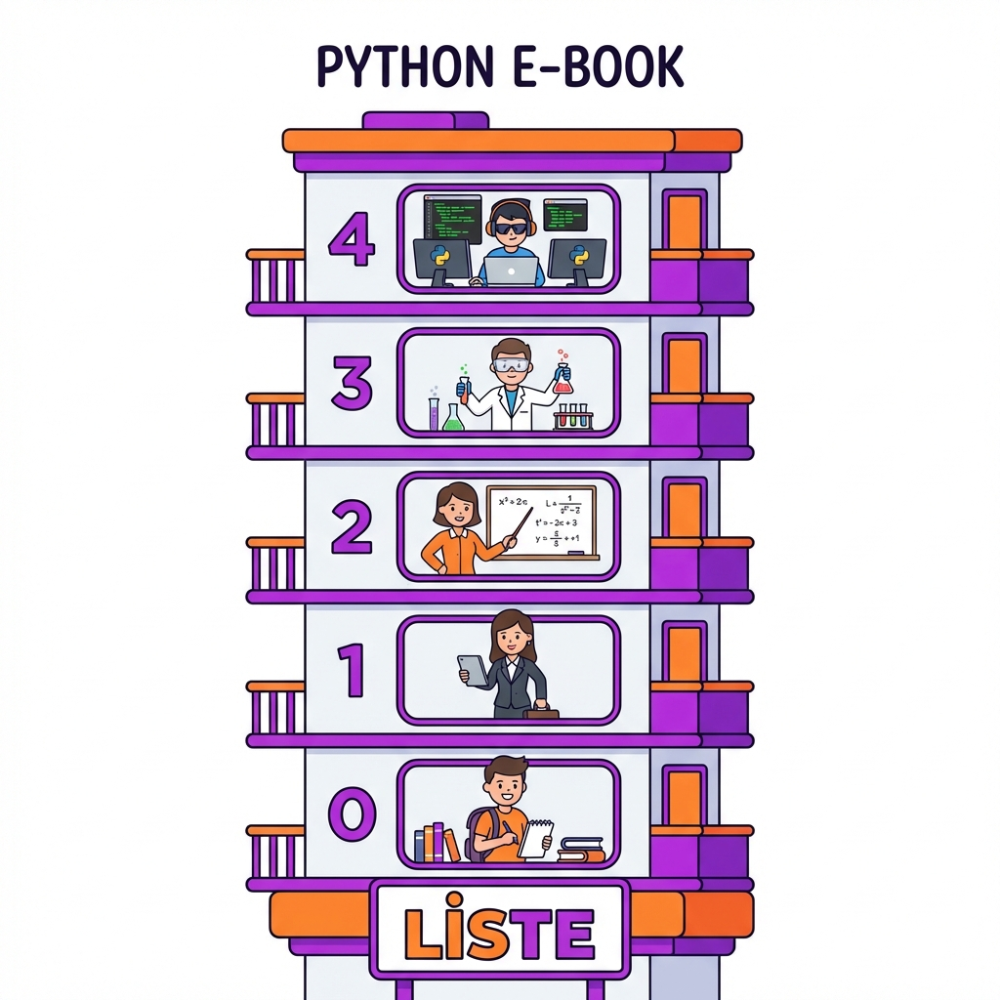

🐍 Python Temelleri
Python LİSTELER E-Kitap


Apartman analojisi ile liste kavramı
Boş ve dolu liste tanımlama
Elemanlara erişim yöntemleri
append, remove, pop ve daha fazlası
Liste parçalarıyla çalışma
Öğrendiklerini test et!
Python'da liste, birden fazla veriyi tek bir değişken içinde tutmamızı sağlayan veri yapısıdır.
Ancak bunu teknik tanımıyla anlamaya çalışmak yerine, zihnimizde bir model oluşturalım.
Bir listeyi, içinde daireler olan bir apartman gibi düşünelim.
Bu apartmanın her dairesinde bir kişi (yani bir veri) oturur.
Ve her dairenin bir kapı numarası vardır. İşte Python bu kapı numaralarına indeks adını verir.

apartman = ["Can", "Zeynep", "Mehmet", "Ayşe", "Ahmet"]
# Kapı numarası = İndeks
# İndeksler 0'dan başlar!
print(apartman[0]) # Can
print(apartman[2]) # Mehmetasal1 = 2
asal2 = 3
asal3 = 5
asal4 = 7
asal5 = 11
# 100 asal sayı için 100 değişken mi?!asal_sayilar = [2, 3, 5, 7, 11,
13, 17, 19, 23]
# Tek değişkende hepsi!Liste kullanarak birçok veriyi tek bir değişkende tutabilir ve kolayca yönetebilirsin!
Liste bir tren gibidir. Her vagon (eleman) bir sonrakine bağlıdır ve tüm tren tek bir isimle çağrılır! Tıpkı fizik deneyi sonuçlarını tek bir listede toplamak gibi.
Fen Örneği: Bir deneyde ölçtüğün 50 farklı sıcaklık değerini tek bir
sicakliklar listesinde tutabilirsin!
# Boş bir liste oluşturma
bos_liste = []
# Asal sayıları tutan liste
asal_sayilar = [2, 3, 5, 7, 11, 13]
# Fizik sınav notları
fizik_notlari = [85, 90, 78, 92, 88]# Boş bir liste oluşturma
liste = list() # []
# Sayı aralığı oluşturma
liste1 = list(range(1, 5)) # [1, 2, 3, 4]
# Metni listeye çevirme
yazi = "Python"
liste2 = list(yazi) # ['P', 'y', 't', 'h', 'o', 'n']# Bir deneyin verileri
deney = ["Serbest Düşme", 9.8, 2.5, True]
# deney adı: "Serbest Düşme"
# yerçekimi (m/s²): 9.8
# süre (s): 2.5
# başarılı mı: TrueListe uzunluğunu öğrenmek için:
asal_sayilar = [2, 3, 5, 7, 11, 13]
print(len(asal_sayilar)) # 6Elemanlar ekleme sırasını korur
notlar = [90, 85, 78]
# Sıra değişmez: [90, 85, 78]Elemanlar güncellenebilir
isimler = ["Ali", "Veli"]
isimler[1] = "Mehmet"
# Sonuç: ["Ali", "Mehmet"]Her elemana indeksle erişim
dersler = ["Mat", "Fiz", "Kim"]
print(dersler[1]) # FizAynı değer birden fazla olabilir
notlar = [85, 90, 85, 85, 92]
# 85 üç kez tekrarlanabilirBir kitaplıktaki kitapları düşün - her kitabın rafta bir sırası var. Programlamada bu sıraya indeks denir ve 0'dan başlar! Tıpkı periyodik tabloda elementlerin atom numarasıyla sıralanması gibi.
notlar = [85, 90, 78, 92, 88]
print(notlar[0]) # 85 (ilk not)
print(notlar[2]) # 78 (3. not)
print(notlar[4]) # 88 (son not)# Sondan başa doğru sayar
print(notlar[-1]) # 88 (son)
print(notlar[-2]) # 92 (sondan 2.)
print(notlar[-5]) # 85 (ilk)Dikkat! İndeks 0'dan başlar! İlk elemanın indeksi 0, ikincinin 1, vb.
Bir dolaptaki eşyaları düşün - istediğin gözü açıp içindekini değiştirebilirsin. Listede de indeks ile istediğin elemanı bulup güncelleyebilirsin! Öğretmen de sınav kağıdını yeniden değerlendirip notu güncelleyebilir.
notlar[2] = 82
Listedeki herhangi bir elemanı değiştirmek için sadece indeksini bilmemiz yeterli. Yeni değeri atadığımızda eski değer kaybolur.
Listeye yeni veriler eklemek için bu iki metodu sıkça kullanırız:
asal.append(11)
elementler.insert(1, "He")
İpucu: append() her zaman listenin en sonuna ekler,
insert() ise istediğin sıraya araya kaynak yapar!
İstenmeyen verilerden kurtulmak için bu metodları kullanırız:
sicaklik.remove(999)
silinen = notlar.pop()
sepet = ["Elma", "Armut", "Muz"]
sepet.clear()
# Sonuç: [] (Boş liste)Listeleri düzenli tutmak için bu iki süper metodu kullanırız:
notlar.sort()
Sadece sayılar değil, kelimeleri de (alfabetik) sıralar!
sayilar.reverse()
Listede kaç eleman var? Aradığım şey nerede? Bu soruların cevabı burada!
Listede kaç tane eşya (eleman) olduğunu söyler.
Bir sınıfta yoklama alırken "Ali isminde kaç kişi var?" diye saydığımızı düşün.
Listede aradığın elemandan kaç tane olduğunu bulur.
Aranan elemanın kaçıncı sırada (indekste) olduğunu bulur.
Listenin en küçük elemanını bulur.
Listenin en büyük elemanını bulur.
Listedeki tüm sayıları toplar.
Not: len(), min(), max() ve
sum() Python'un yerleşik fonksiyonlarıdır. Metodlardan farklı olarak
fonksiyon(liste) şeklinde kullanılır!
Örnek Liste: elementler = ["H", "He", "Li", "Be", "B"]
Bir pastadan dilim almak gibi düşün - istediğin yerden başla, istediğin yerde bitir. Fizik deneyinde 10 ölçüm yaptın ama sadece ortadaki 5 ölçümü analiz etmek istiyorsan dilimleme kullan!
liste[başlangıç : bitiş : adım]
elementler[1:4]
→ ["He", "Li", "Be"]
elementler[:3]
→ ["H", "He", "Li"]
Başlangıç boş bırakıldığında 0'dan başlar.
elementler[2:]
→ ["Li", "Be", "B"]
Bitiş boş bırakıldığında sona kadar gider.
elementler[::2]
→ ["H", "Li", "B"]
2'şer 2'şer atlayarak alır! (0, 2, 4...)
elementler[::-1]
→ ["B", "Be", "Li", "He", "H"]
Listeyi tamamen tersine çevirmenin en havalı yolu! 😎
elementler[-2:]
→ ["Be", "B"]
Sondaki 2 elemanı al.
elementler[:]
→ ["H", "He", "Li", "Be", "B"]
Listenin tamamını kopyalar.
elementler[1:-1]
→ ["He", "Li", "Be"]
Baştaki ve sondaki elemanları at, sadece ortayı al!
Çıktıyı tahmin et:
sifre = ["P", "Y", "T", "H", "O", "N"]
print(sifre[1:5:2])
Bir çokgenin köşe açılarını tutuyorsan acilar[::2] ile her ikinci
açıyı alabilirsin!
Konuyu ne kadar anladığını test edelim. (1/3)
liste = [2, 3, 5, 7]. len(liste)
nedir?
Listenin en sonuna eleman eklemek için?
Soruların Devamı (2/3)
s = [1, 1, 2, 3, 5, 8]. print(s[-2])?
p = [10, 20, 30, 40, 50]. p[1:4]
sonucu?
Son Sorular (3/3)
[2, 4, 6] → pop() →
append(10)?
r = [1, 2, 3]. r[::-1] çıktısı?
Senaryo: Öğrencinin en düşük notunu silip ortalamasını hesaplıyoruz.
notlar.sort()
notlar.pop(0)
İşlemi Python koduna dökelim.
notlar = [50, 80, 70]
# 1. Sırala
notlar.sort() # [50, 70, 80]
# 2. En küçüğü sil
notlar.pop(0) # [70, 80]
# 3. Ortalamayı bul
toplam = sum(notlar)
adet = len(notlar)
ort = toplam / adet
print(ort) # 75.0Python ile kendi akıllı alışveriş listeni oluşturmanı istiyoruz.
market adında, içinde "Ekmek" ve "Süt" olan
bir liste oluştur.Listeleri ve if yapısını birlikte kullanalım:
tam_sayilar adında 1'den 10'a kadar sayıların
olduğu bir liste oluştur.ucun_kati adında boş bir
liste oluştur.tam_sayilar
içindeki 3'e tam bölünen sayıları bul.append() ile
ucun_kati listesine ekle.
Bu ödevi yaparken tüm liste metodlarını (append, insert, remove, sort) kullanmış olacaksın!
Python Listeler modülünü tamamladın!
Bu e-kitap, sevgili Kars Fen Lisesi öğrencilerine sevgiyle hazırlanmıştır.